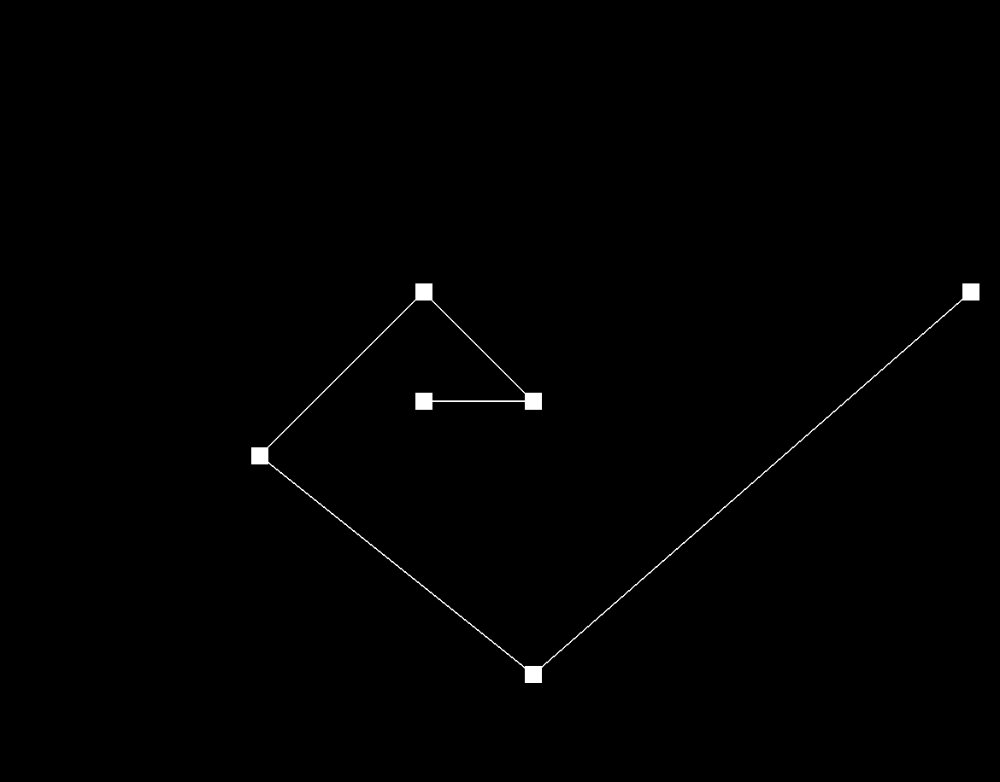
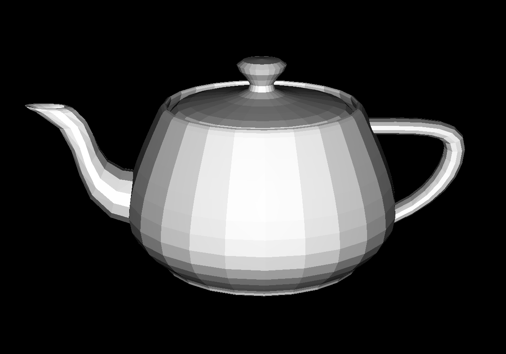

Overview
This project taught us a lot about drawing 3D objects through meshes. The mesh was composed of many different components such as verteces, edges, and faces. The most important component is the half edge, which has pointers to a lot of its neighboring components. Following these pointers allows us to traverse the mesh. We implemented the flip and split operations that can be performed on edges. These implementations allowed us to implement loop subdivision, which allows us to upsample the mesh to get a smoother mesh.
Section I: Bezier Curves and Surfaces
Part 1: Bezier curves with 1D de Casteljau subdivision
De Casteljau's Algorithm is a way of evaluating a Bezier Curve with arbitrary number of control points. Implementing it is as simple as using lerping between each of the n control points to get n-1 new cotrol points. Then recursively doing this until there is only one control point left. This will be the value on the bezier curve with the given t value. To be clear, each control point is only lerped with its adjacent control points in the input vector, and the amount to lerp by is the value t.
We created a .bzc file where we plotted
the first 6 points of the fibonocci spiral (shown in figures below).
This did not actually draw a golden spiral however
because this spiral requires the curve to pass
through all the points which the bezier curves do not do.
|

|
|
|
|
|
|
|
|
|
|
|
Part 2: Bezier surfaces with separable 1D de Casteljau subdivision
De Casteljau's algorithm can be expanded to surfaces in the following way. Since we're given a vector of vectors of 3D points, we first run the standard de Casteljau's algorithm on each of the vector's, using u as the float t. We save all the points that this ouputs into a new vector. Once this is done we run the standard de Casteljau's algorithm on these points using v as our t value. This gives us our final value.
Section II: Sampling
Part 3: Average normals for half-edge meshes
In this section we wrote a function to calculate a normal for a vertex. These vertex normals can be used for Phong Shading, which is where the normals of each of the vertexes are interpolated across the triangle and used to calculate the color. To calculate the normal of any given vertex we iterated over all of the adjacent faces using the half edges. For each of the faces we calculated its normal and its area. We then averaged together all of these normals using the area of the triangle. With this done the shading became much less blocky, as can be seen in the images below.
|  |
For a while we were dealing with a bug where when we tried to turn on the shading the whole object would just turn dark. Through the debugger we found that the area of each of the adjacent faces were being calculated to be zero. We discovered it was because we were accidentally assigning two different pointers to the same vertex for each triangle. This means we were trying to calculate the area of a line, which is why we were always getting zero. Once we fixed this, it worked as intended.
Part 4: Half-edge flip
To implement the edge flipping operation, we first check if edge
e0 is a boundary, which we ignore if it is. Then, we
grab all the pointers that describe the triangles (a,b,c)
and (c,b,d). To do that, we go through
e0's half-edge, then go to that half-edge's next, and
so on until we've collected all the pointers to the half-edges and
faces that we want. We then assure that the face (c,b,d)
is pointing to the half-edge bc and (a,b,c)
is pointing to the half-edge cb so that when we later
reassign the faces, we are confident on which face pointer we have.
Then, we change the edge CB into the edge AD
by modifying the half-edges' source vertecies from c
to d and b to a. We also
assure that the vertices c and b are not
pointing to the half-edges cb and bc by
reassigning those vertices' half-edges to be ca and
bd, respectively. Finally, we go through all the
half-edges and reassign their attributes using the
Halfedge::setNeighbors method, effectivly modifying
the next and face attributes and changing
the (a,b,c) and (c,b,d) triangles into
the (a,d,c) and (a,b,d) triangles.
|
|
|
|
|
Part 5: Half-edge split
We approached the half edge split in the same way as we approached the half edge flip. We drew the triangles before and after and gave each component a name. Then when we wrote the code, we first got the pointer to each of the existing component and named them in the same way as in our drawing. Then we created the new components. We needed to create 2 faces, 3 edges, 6 half edges, and one vertex. All of the new components needed all of their pointers assigned. The faces, edges, and vertex all needed a half edge to point to. The half edges needed many other pointers assigned. After we did this we just needed to changed the next pointers of all the existing half edges. In the figures below you can see the difference between the original mesh and one in which we split and flipped edges.
|
|

|
Part 6: Loop subdivision for mesh upsampling
Our implementation of loop subdivision followed the suggested flow
as commented in the skeleton code. We first calculated the position
of all the old vertices according to their weighted average of
neighboring vertex positions as well as set each old vertex's
isNew attribute to false. Then, we
calculated the position of new vertices according to the logic
presented in the spec and set all the old edge's isNew
attribute to false. Then, we iterate through the
list of edges and split them. At first, we were iterating through
the edges list with a stopping condition of reaching the end of
the list, which we later learned caused our code to go into an
infinite loop because in every iteration we were adding new edges
into the edges list. Therefore, we added a counter and updated our
stopping condition to be when the counter equals the orginal length
of the edges list. Then, we iterate through the the list of edges
and flip all the edges whose isNew attribute is set
to true. Here, we updated our HalfedgeMesh::splitEdge
method to set the isNew attribute to true for
the three edges created so that when we went through our flipping
iteration, we could check if the edge was a new one. If the edge
was new, then we also checked if the edge went from an old vertex
to a new one by accessing the vertices through the edge's half-edges.
Finally, we reassign all the vertices' position to the new positions
we calculated earlier in one final iteration over the verices list.
At first, we were not assining the old edge's isNew
attribute to false when iterating through them, which
caused the bug shown below. All we had to do to fix this was to make
sure we assigned the old edge's isNew attribute to
false.
|
|
|
After going through the different files and playing around with the upsampling, we found that sometimes the object would get a divot, as shown below. We noted that we could prevent the divot from happening by flipping one of its edges back and forth. Therefore, at the end of our loop division implemenation, we added a loop that would flip every edge in the mesh twice, which ended up fixing the bug.
|
|
We also came across an error when trying to upsample the beetle.dae
file. Using our IDE, we found that we were not checking if the edge to be
split was a boundary in our upsample method. This caused an
attempt to access a null pointer because the HalfedgeMesh::splitEdge
method returned one if the edge was a boundary. We fixed this bug simply by
adding a isBoundary check before attempting to split the edge,
which we would skip if it was a boundary.
After loop subdivisions, the sharp corners and edges in the meshes
smooth over, creating a smoothed out object.
|
|
|
Although by pre-splitting some edges does create a lasting effect on the mesh after upsampling, the mesh still appears to be smoothed out, as seen below on the cow's nose.
|
|
|
Performing several iterations of loop subdivision on the cube made the cube a bit asymmetric. We found that by manually splitting every edge that was along a face of the cube before upsampling would effectivly preprocess the cube so that it would subdivide symmetrically. This preprocessing makes sense because it is esentially giving the cube's faces equal triangles before upsampling, whereas if we don't preprocess the cube like this, the cube starts off with uneven triangles on each face.
|
|
|
|
|
|